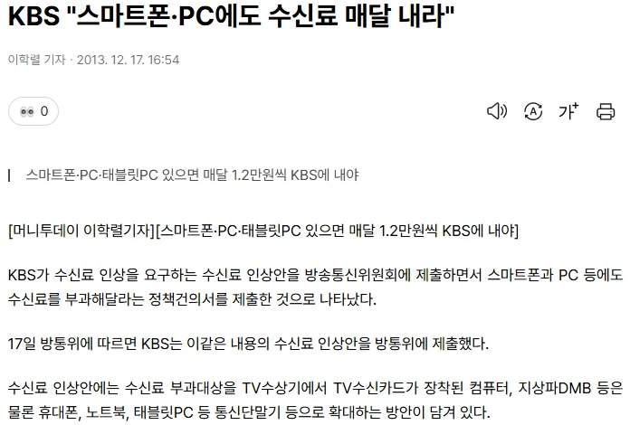

스마트폰의 대중화가 성공하자 KBS가 했던 제안

물론 뭔 개소리냐는 비난과 함께 철회 엔딩
스마트폰의 대중화가 성공하자 KBS가 했던 제안

물론 뭔 개소리냐는 비난과 함께 철회 엔딩
케븅신 저것들 기회되면 또 저 지랄할 거 100퍼
일본에서는 통했거든
아직도 일본은 아이폰 아니면 안드폰은 수신료 내지?
안내
안내해주세요
어이가 없네 미쳤구만
엥? 처음듣는데?
나일본살때 TV확인 집들어오려고하던데
안냄...
안내는데
맞음 NHK는 악마놈들이다
디지털 창문세냐?
1,200원도 아니고 12,000원 ㅋㅋㅋㅋ
하는 일 없이 연봉만 높은 부장, 차장급 월급줘야 한단 말이예요..
저거 했으면 KBS로부터 국민을 지키는 당 한두좌석은 나왔을거다 ㅋㅋ
개병신.
미친놈들
진짜 개좆같은 소리 할 떄마다 이나라가 프랑스가 아닌게 안타까움 저딴소리 하면 폭동 일으켜서 끌어내야 하는데
우리나라 사람들이 고분고분해서 리스크없이 아무말 뱉어도 되긴함. 근데 인터넷에선 안됨
이게 뭔 개소리야?
일본에선 nhk가 현재진행형으로 하는중 ㅋㅋㅋ
Nhk one 어플 다운받으면 티비 볼수있는데
앱 자체는 무료임. 근데 나중에 가입청구서 날아옴
저때 스마트폰 pmp에 dmb 달리면서 시작된 개솔...
그 논리면 TV 안 보고 유튜브만 봐도 수신료 내야 되는 거냐
솔직히 할 수만 있다면 그거도 하고싶어 할 듯?
그건 이미 내고 있잖아
우리집 tv 공중파 선 연결조차 안 한 유튭머신인데도 수신료 내는 중ㅠ.ㅠ
티비 치우고, 집에 티비 없다고 안내겠다고 신고하
그건 원래 안내는게 맞음 걍 돈날리고 있던거임
어떻게???
검사원 왔을 때만 공중파 선 뽑아놓는 거랑 구별이 가능해?
티비에 케이블 꼽는게 있으면 티비로 인식하고 부과함.
모니터는 케이블 꼽는게 없어서 부과 안함.
티비 겸용 모니터는 케이블 꼽는게 있어서 부과함.
그럼 부과당하는 게 맞네ㅠ.ㅠ
꼼수로는 티비를 어디다 숨기고 티비 없다고 하면됨.
아파트에 살면 관리실에서 확인함.
근데 집에 들어와서 막 뒤지고 하지 않을걸
관리사무소에 없다고 했더니 알았다고 하고 그냥 처리해줌.
신청 하는거 있는데 본인이 직접해야됨.
찾아보니 원래 안내는게 맞는건 아니네 근데 tv 선 연결해서 쓰는거 아니면 그냥 방문시 에만 tv 치워놓으면 된대 윗댓 말처럼 하면 될듯 난 안내고 있었어서 이게 맞는줄 알았네
캬 그들에겐 그저 국민은 돈이구나 돈이야

저거 하자고 고안한 새끼들 부터 최종 결제자 까지 빠따로 대가리 터뜨려야 함
이거 지금 일본이 하고 있지않나 ㅋ
2014년 12월 1일 MBC,SBS 등 주요 방송사들은 네이버TV 등 국내 플랫폼 독점 공급 및 수익성 강화를 위해 유튜브 콘텐츠 공급을 중단했으나,
유튜브의 압도적인 시장 점유율을 넘지 못하고 결국 다시 복귀했습니다.
ㅋㅋ
일본에선 통했음
저거 의견낸 임원 나이가 몇이었울까
NHK 따라하려던 미친 친일파새끼들